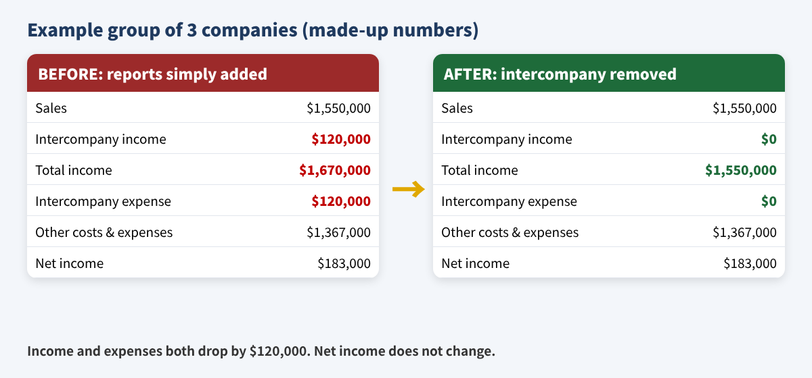
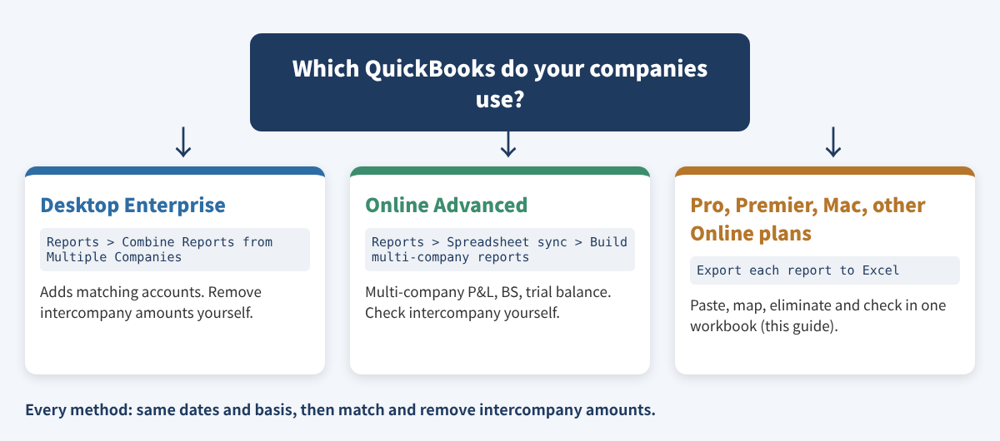
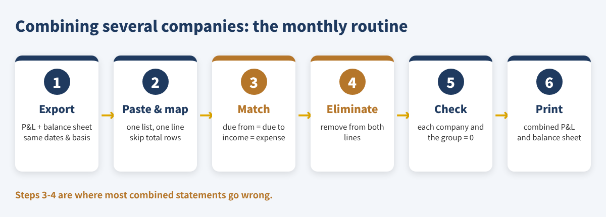

If you own a restaurant and the LLC that owns its building, or a store plus a catering company, sooner or later a bank, an SBA lender or your CPA will ask for one profit and loss and one balance sheet for the whole group. QuickBooks keeps each company in its own file, and most editions have no button that adds them together. People copy numbers into a spreadsheet, the totals do not tie, and the rent one company pays the other shows up as both income and expense. This guide shows a method you can follow with nothing but QuickBooks and Excel or Google Sheets.
It is written for owners and bookkeepers who manage two to four related companies with the same owners, on the same fiscal year. If outside investors own part of a company, or one company keeps its books in another currency, read the FAQ first.
Combined statements show the group as if it were one business. Anything that happened between your own companies did not happen with the outside world, so it must come out. The three usual items are:

Check what your edition can do before you build anything.

Use the same dates and the same basis (cash or accrual) for every company. If one company is on a different fiscal year or basis, fix that first - the totals cannot be combined honestly otherwise.
Make one sheet with four columns: Company (A, B, C...), Account, Amount and Combined line. Paste each company's report rows under each other and type a short combined line next to each account - the same line for accounts that mean the same thing (Phone and Telephone both go to Other operating expenses).
| Company | Account (as exported) | Amount | Combined line |
|---|---|---|---|
| A | Checking - Operating | $72,000 | Cash and bank |
| A | Accumulated Depreciation | ($70,000) | Fixed assets (net) |
| A | Total Assets | $255,000 | SKIP (total row) |
| A | Rent - Property LLC | $96,000 | Intercompany expense |
| B | Rental Income - Restaurant LLC | $96,000 | Intercompany income |
| B | Due from Restaurant LLC | $16,000 | Due from related companies |
Example values for three made-up companies.
Three rules prevent most errors: keep each amount's sign exactly as the report shows it (accumulated depreciation and owner draws are negative), mark every heading and total row as SKIP, and map the balance sheet's Net Income row to its own line so you can check it against the P&L.
Then build the combined statement with one formula per line and company. With the list in columns A to D on a sheet named Data, company code in C1 and the line name in A5:
=SUMIFS(Data!$C:$C, Data!$A:$A, C$1, Data!$D:$D, $A5)
Copy it across for each company and down for each line. A total column is a plain =SUM() of the company columns. The formula works the same in Google Sheets.
Before you eliminate anything, the two sides must agree. Add up every company's due-from balance and every company's due-to balance; they must be equal. Do the same with intercompany income and intercompany expense. A difference means one company recorded something the other did not - usually a payment in transit at month end or a bill one company paid for the other. Fix it in QuickBooks and export again.
Then add an Eliminations column. Each elimination removes the same amount from two lines on opposite sides of the same statement:
| What it is | Remove from | And from | Amount |
|---|---|---|---|
| Rent: restaurant pays property LLC | Intercompany income | Intercompany expense | $96,000 |
| Management fee: catering pays restaurant | Intercompany income | Intercompany expense | $24,000 |
| Rent still owed between them | Due from related companies | Due to related companies | $16,000 |
Example values.
The elimination for a line is =-(SUMIF(Elim!$B:$B,$A5,Elim!$D:$D)+SUMIF(Elim!$C:$C,$A5,Elim!$D:$D)), and the combined column is total plus eliminations. In the example, combined income falls from $1,670,000 to $1,550,000 and total assets from $1,286,000 to $1,270,000, while net income stays $183,000.

| Check | Formula idea | Should be |
|---|---|---|
| Each company balances | Total assets - (total liabilities + equity) | 0 |
| Net income agrees | BS net income line - P&L net income | 0 |
| Nothing left between companies | Combined due from + due to + intercompany income + expense | 0 |
| Combined balance sheet balances | Combined assets - combined liabilities and equity | 0 |
If a company does not balance, a real account was marked SKIP or a total was mapped. If net income disagrees, the P&L and balance sheet were run for different dates.
Not with a built-in report. Intuit's community answer points to exporting each company's reports to Excel or using a third-party reporting app.
No. The combined line column does the matching. Matching account names only matters for the Desktop Enterprise combine feature.
Then the combined statements need a minority (noncontrolling) interest. This method does not cover that - ask your CPA.
Convert its reports to US dollars first using a documented rate, then paste them. Currency translation rules are beyond this guide.
Monthly if a lender watches covenants; otherwise quarterly and at year end. Exporting the same report settings each time keeps the rows in the same order.
You can download the ready-made Multi-Company Combined Financial Statements Builder 2026 for free in the Free kit download box below (Excel + PDF guide, no sign-up).
This article is for education only and is not tax, legal or accounting advice. Example companies and numbers are made up. Menu names were checked against Intuit help articles in November 2026 and may change. QuickBooks is a registered trademark of Intuit Inc.; not affiliated with or endorsed by Intuit.